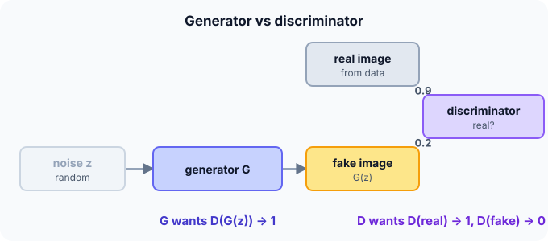

Prerequisites
- Binary cross-entropy.
- Neural networks as functions.
- Backpropagation.
The analogy
Everyday analogy
Think of a forger and an art detective. The forger paints fakes; the detective learns to spot them; the forger studies what gave the fakes away and improves. As both get better, the forgeries become hard to tell from the real thing.
In a GAN, the generator is the forger and the discriminator the detective, and they train in alternation.
How it works
Losses: discriminator: $L_D = -[\ln D(x) + \ln(1 - D(G(z)))]$. Generator (non-saturating form): $L_G = -\ln D(G(z))$. $x$ is a real sample, $z$ random noise.
Start with the two losses by hand
The discriminator outputs $D(x_{\text{real}}) = 0.9$ and $D(G(z)) = 0.2$. Predict, then open "Check".
Example: predict before you read
Step 1. Discriminator loss $-\ln 0.9 - \ln(1 - 0.2)$.
Check
$0.105 + 0.223 \approx 0.33$: the detective is doing well.
Step 2. Cover the next line and guess: the generator loss $-\ln D(G(z))$.
Check
$-\ln 0.2 \approx 1.61$: the forger is losing.
Step 3. Which direction does each network's training push $D(G(z))$?
Check
The discriminator pushes it down towards 0 (spot fakes); the generator pushes it up towards 1 (fool the detective).

Quick recall: Before reading further, cover the text above and say out loud: what does each network want?
Check your answer
The discriminator wants to output 1 for real and 0 for fake; the generator wants its fakes to get outputs near 1.
Finish the picture: equilibrium
Suppose training succeeds and the fakes become indistinguishable from real data.
- The discriminator's best output. Predict it for any input.
Check
0.5: it can only guess.
- Both losses there. Predict them.
Check
$L_D = -\ln 0.5 - \ln 0.5 = 2\ln 2 \approx 1.39$; $L_G = -\ln 0.5 \approx 0.69$. Losses near these values don't mean failure: in a GAN, they mean balance.
Quick recall: Without scrolling up, say out loud: what are both losses at the ideal equilibrium?
Check your answer
With $D = 0.5$ everywhere: $L_D = 2\ln 2 \approx 1.39$ and $L_G = \ln 2 \approx 0.69$.
Full worked calculation
The two losses of a GAN computed on a mini-batch of 2 real and 2 fake images. The discriminator outputs $D = [0.9, 0.8]$ on the real ones and $D = [0.2, 0.3]$ on the fakes. Then: why the generator uses $-\ln D$, and what the losses look like at equilibrium.
| Image | Real or fake | $D(x)$ | D wants | D loss term | G loss term $-\ln D$ |
|---|---|---|---|---|---|
| 1 | real | 0.9 | 1 | $-\ln 0.9 = 0.105$ | |
| 2 | real | 0.8 | 1 | $-\ln 0.8 = 0.223$ | |
| 3 | fake | 0.2 | 0 | $-\ln 0.8 = 0.223$ | $-\ln 0.2 = 1.609$ |
| 4 | fake | 0.3 | 0 | $-\ln 0.7 = 0.357$ | $-\ln 0.3 = 1.204$ |
-
1Discriminator loss on real images
$$-\ln D(x_{\text{real}}): \quad -\ln 0.9 = 0.105, \quad -\ln 0.8 = 0.223$$The discriminator is a binary classifier with "real" = 1. It is punished for giving real images a low probability.
-
2Discriminator loss on fakes
$$-\ln(1 - D(G(z))): \quad -\ln 0.8 = 0.223, \quad -\ln 0.7 = 0.357$$For fakes the target is 0, so the relevant probability is $1 - D$. Fake 2 fooled the discriminator a bit more (0.3), so it costs more.
-
3Total discriminator loss
$$L_D = \frac{(0.105 + 0.223) + (0.223 + 0.357)}{2} = \frac{0.908}{2} = 0.454$$Sum over each real/fake pair, averaged over the batch. A low value means the discriminator is currently winning.
-
4Generator loss
$$L_G = \frac{-\ln 0.2 - \ln 0.3}{2} = \frac{1.609 + 1.204}{2} = 1.407$$The generator only cares about the fakes: it wants $D(G(z))$ close to 1. It is clearly losing right now.
-
5Why −ln D and not ln(1 − D)
$$\frac{d}{dD}\big(-\ln D\big) = -\frac{1}{D} = -5 \;\; \text{at } D = 0.2, \qquad \frac{d}{dD}\ln(1 - D) = -\frac{1}{1 - D} = -1.25$$Minimising $\ln(1 - D)$ is the original minimax game, but when the generator is bad ($D$ small) its gradient is weak. $-\ln D$ gives a 4 times stronger signal exactly when the generator needs it most.
-
6At equilibrium
$$D = 0.5 \text{ everywhere}: \quad L_D = -\ln 0.5 - \ln 0.5 = 1.386, \qquad L_G = -\ln 0.5 = 0.693$$If the fakes are perfect, the best the discriminator can do is guess 0.5. These two numbers are useful landmarks when reading GAN training curves: losses do not go to 0, they hover around these values.
What the numbers tell us
On this batch $L_D = 0.454$ (discriminator winning) and $L_G = 1.407$. Training alternates: one step lowering $L_D$, one step lowering $L_G$.
Unlike other networks, falling losses do not mean progress: a GAN is healthy when both losses stay near the equilibrium values 1.39 and 0.69.
The rule in plain words
Alternate: (1) train $D$ on a batch of real samples (label 1) and generated samples (label 0); (2) train $G$ to make $D$ label its samples 1, with $D$ held fixed.
Keep the two in balance: if $D$ wins completely, $G$ gets no useful gradient; if $G$ wins too easily, $D$ stops being a useful critic.
Quick recall: Before you read the code, describe one GAN training step in your own words. Then check below.
Check your answer
Update the discriminator to score real samples high and generated ones low; then update the generator so the discriminator scores its samples higher.
The code
Read this code after you have computed the two losses by hand. It will make more sense.
double d_loss(double d_real, double d_fake) { /* discriminator: real → 1, fake → 0 */
return -log(d_real) - log(1 - d_fake);
}
double g_loss(double d_fake) { /* generator: wants D(G(z)) → 1 */
return -log(d_fake); /* non-saturating form */
}Definition
What you just did, in one line: a generative adversarial network trains a generator to produce samples that a discriminator, trained at the same time, cannot distinguish from real data.
flowchart TD
A["sample real data and noise z"] --> B["train D: real → 1, G(z) → 0"]
B --> C["train G: make D(G(z)) → 1, D fixed"]
C --> D{"samples good enough?"}
D -->|no| A
D -->|yes| E["use G alone to generate new samples"]
Putting numbers on it
Quick recall: Before looking at the formula, predict: why train the generator with $-\ln D(G(z))$ instead of $\ln(1 - D(G(z)))$?
Check your answer
Early on $D(G(z))$ is near 0, where $\ln(1 - D)$ is flat and gives tiny gradients; $-\ln D$ gives strong gradients exactly then.
The original minimax objective and our numbers:
$$\min_G \max_D \; \mathbb{E}[\ln D(x)] + \mathbb{E}[\ln(1 - D(G(z)))], \qquad L_D = 0.33,\; L_G = 1.61$$| State | $D(\text{real})$ | $D(\text{fake})$ | $L_D$ | $L_G$ |
|---|---|---|---|---|
| Our example | 0.9 | 0.2 | 0.33 | 1.61 |
| Discriminator dominates | 0.99 | 0.01 | 0.02 | 4.61 |
| Equilibrium | 0.5 | 0.5 | 1.39 | 0.69 |
| Generator fools D | 0.6 | 0.9 | 2.81 | 0.11 |
Warning
GANs are notoriously unstable. A common failure is mode collapse: the generator finds a few outputs that fool the discriminator and produces only those, so all its samples look alike.
Exam tip
Write both losses, say which network minimises which, and explain the non-saturating generator loss. Mention mode collapse as the classic failure.
Common mistakes
- Updating the discriminator while training the generator (it must be held fixed in that step).
- Reading a low generator loss as "good images"; GAN losses don't measure sample quality directly.
- Letting the discriminator become so strong that the generator's gradients vanish.
Try it yourself
Exercise 1 (warm-up)
If $D(\text{real}) = 0.8$ and $D(\text{fake}) = 0.4$, compute both losses.
Hint
Use $-\ln$.
Answer
$L_D = 0.223 + 0.511 \approx 0.73$; $L_G = -\ln 0.4 \approx 0.92$.
Exercise 2 (a bit harder)
Early in training $D(G(z)) = 0.01$. Compare the gradient sizes of $\ln(1 - D)$ and $-\ln D$ with respect to $D$ at this point. Write your answer down before you open it.
Show answer
$\frac{d}{dD}\ln(1 - D) = -1/(1 - D) \approx -1.01$; $\frac{d}{dD}(-\ln D) = -1/D = -100$. The non-saturating loss gives about 100 times stronger gradients when the generator is still bad.
Did you know?
Did you know?
Ian Goodfellow came up with GANs in 2014, reportedly after a discussion in a Montreal bar, and wrote the first working version that same night.
StyleGAN (2019) produced the photorealistic faces of "this person does not exist"; diffusion models have since taken over much image generation.
Key points to remember
If you remember one thing from each line, remember the because.
- GANs need no explicit quality measure because the discriminator learns to judge realism.
- The two networks are adversaries because one's loss goes down when the other's goes up.
- At equilibrium $D = 0.5$ because perfect fakes can't be told apart from real data.
- The non-saturating loss helps early training because it gives strong gradients when fakes are easy to spot.
- Mode collapse happens because the generator can fool the discriminator with a few repeated outputs.
Self-check questions
Answer these in order, out loud. They follow the page, so your answers become the script of your video.
- How is a GAN like a forger and an art detective?
Sample answer
The forger (generator) makes fakes, the detective (discriminator) learns to spot them, and both improve against each other.
- Compute the GAN losses when $D(\text{real}) = 0.9$ and $D(\text{fake}) = 0.2$.
Sample answer
$L_D \approx 0.33$, $L_G \approx 1.61$.
- Why does
g_lossuse-log(d_fake)rather thanlog(1 - d_fake)?A good answer mentions early training.
Sample answer
When fakes are poor, $D(G(z))$ is near 0, where $\ln(1 - D)$ is nearly flat; $-\ln D$ has a large gradient there, so the generator learns faster.
- So what is a GAN, in one sentence?
Sample answer
A generator and a discriminator trained against each other until the generator's samples are indistinguishable from real data.
- Why is $D = 0.5$ the sign of success, not failure?
A good answer imagines perfect fakes.
Sample answer
If the fakes are perfect, the best the discriminator can do is guess, so it outputs 0.5 for everything.
- What are the two losses?
Sample answer
$L_D = -[\ln D(x) + \ln(1 - D(G(z)))]$ and $L_G = -\ln D(G(z))$.
- What is mode collapse?
Sample answer
The generator produces only a few kinds of samples that fool the discriminator, losing the variety of the real data.
- If you had to teach this to a friend in 2 minutes, what would you leave out, and why?
Sample answer
I'd leave out the minimax formula and the non-saturating trick. I'd keep the forger-detective analogy, the 0.9/0.2 loss example, and "two networks compete; at the end D can only guess".
External resources
- Google: Generative Adversarial Networks course: structure, losses and common problems.
- Goodfellow et al.: Generative Adversarial Nets (arXiv): the original paper.
- GAN Lab: train a small GAN interactively in the browser.
Videos
- YouTube search: GANs explained: pick a short visual introduction.